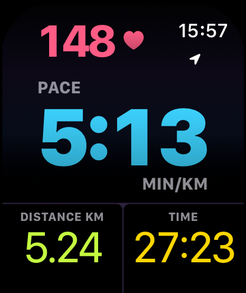

Outdoor
Records your run with GPS. After the run, see your route colored by relative pace. The workout and route are saved to Apple Health.
Large, easy-to-read pace, heart rate, distance, and time on your wrist. Double Tap to switch your main metric without touching the screen.
Apple Watch with watchOS 26 or later
iPhone companion app with iOS 26 or later




Create, save, and preview custom running workouts for free on iPhone. Build intervals with time or distance goals, repeat groups, and optional heart rate zone targets.
With Runner Pro, sync your workouts to Apple Watch and follow each step with progress and haptic cues. Requires watchOS 27 or later.
Learn how to use WorkoutsTap your thumb and index finger together twice to switch the main metric while you run.
Switch between current and average pace for free. Runner Pro adds lap pace and, outdoors, elevation gain.
Requires an Apple Watch that supports Double Tap, with Runner’s Cycle main metrics setting turned on.
Set up Double TapSee which zone you are running in at a glance. Included in Runner Pro for Apple Watch with watchOS 27 or later.
About heart rate zonesA band along the edge of the display shows all five zones. Your current zone fills up as your heart rate climbs through it.
Runner uses the heart rate zones in Apple Health. No extra permissions are needed.
After the run, the summary shows how long you spent in each zone.
The main metric gets the most space, with heart rate above and distance and time below.
Current pace, average pace, or heart rate. Tap the main value to switch during a run.
Pick metrics, colors, and text weights on the watch or in the iPhone app. Hide the top row for a larger main value.
Your layout syncs between iPhone and Apple Watch. Runner records the run on the watch, so you can leave the phone at home.
Records your run with GPS. After the run, see your route colored by relative pace. The workout and route are saved to Apple Health.
Uses the watch’s motion sensors for distance and pace. No GPS or route recording.
Hold OUTDOOR or INDOOR on the start screen to switch modes.
BUILT ON APPLE’S WORKOUT TECHNOLOGY
Runner uses Apple’s workout APIs for heart rate, distance, and outdoor running speed, with Core Location for GPS. See where each metric comes from and which calculations Runner adds.
Explore the technologyThe training session and core measurements are handled through HealthKit on Apple Watch.
Outdoor positions supply your route and the altitude readings Runner uses to calculate elevation gain.
Your workout and available route are saved with your permission.
Record runs, see your core metrics, and plan custom workouts on iPhone for free. Runner Pro is a one-time purchase in the iPhone app, with no subscription.
About Runner ProNo account, no ads, no analytics. Runner processes your workout on Apple Watch and saves it to Apple Health with your permission. No health or location data is sent to us.
Read the privacy policy